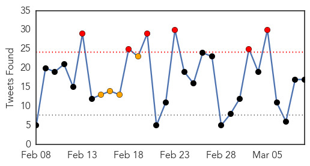
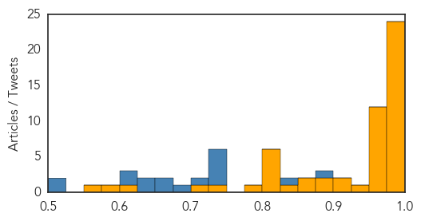
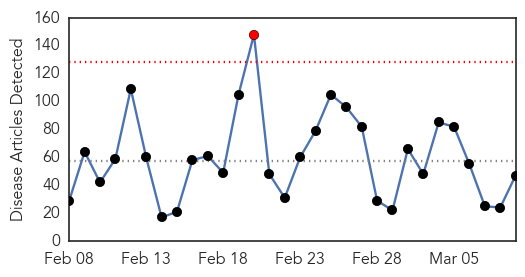

Ebola
30-Day Web Trend
0 alerts, 0 warnings

30-Day Twitter Trend
6 alerts, 4 warnings

Article Locations


Article Confidences
Top Articles:
- 1.000
- Ebola leaves ongoing health issues for survivors of the viral disease
- 1.000
- Last Ebola patient is released in Liberia
- 1.000
- Last Ebola patient is released in Liberia
- 1.000
- The Marietta Daily Journal
- 0.999
- Antiseptic shows 99.9% efficacy against Ebola virus
- 0.998
- Liberia Discharges its Last Ebola Patient
- 0.998
- In disease outbreaks, maps offer direction
- 0.998
- Liberia's Ebola hunters are trying to strike a death blow to the epidemic
- 0.997
- Ellen Addresses ACP-EU Parliamentarians; Holds Talks With EU Executives
- 0.996
- Patients get preliminary negative for Ebola in London, Ont., hospital
- 0.995
- Quarantined refugees test negative for Ebola
- 0.994
- New Ebola cases are declining: Why that's bad news for a cure
- 0.994
- Preventing Ebola could be a scrub away!
- 0.994
- UN aims to prevent the next pandemic through better disease detection in Africa
- 0.993
- Preventing Ebola could be a scrub away!
- 0.993
- WHO: Sharp decline in Ebola cases has now leveled off
- 0.991
- Ebola and the International Health Regulations Treaty
- 0.984
- Liberia president calls for zero Ebola cases, vigilance
- 0.981
- Toronto doctor returns from front line of Ebola fight
- 0.980
- Baltimore man arrested in robbery of 4-year-old girl, mother
- 0.980
- Rawlings-Blake to focus State of the City speech on small businesses
- 0.977
- Strong minds saves lives: Providing psychosocial support in Sierra Leone
- 0.976
- Vaccine for Ebola Reaching Last Trial Phase
- 0.975
- US President Barack Obama to bring back US troops fighting Ebola in West Africa
- 0.974
- Ebola – Resilience, Challenges and Opportunities in the U.S. and Beyond
- 0.972
- ABC Medical Editor Dr. Richard Besser Talks Medical Issues in Pr
- 0.968
- Ebola nurse returns to Liverpool after life-saving Sierra Leone mission
- 0.967
- Dead Que. man tests negative for Ebola
- 0.960
- Using public health education to fight Ebola: Roehampton online student example
- 0.960
- The Brother Went To Fight Ebola. So Did His Sister. Mom Was 'A Wreck'
- 0.951
- As Libya dialogue proceeds, UN Mission says participants determined to 'bridge differences'
- 0.951
- Rationalizing Lunacy: The Intellectual as Servant of the State
- 0.951
- New UK law will seek to prevent high risk individuals flying to Iraq and Syria
- 0.951
- Virgin Group in final stages of planning for two new cruise ship orders
- 0.951
- Here's how a gay man became the brother of his own son
- 0.951
- Greensboro News & Record: Nation / World
- 0.926
- Sierra Leone Christian addresses Queen
- 0.918
- Liberia’s Maritime Chief Addresses Challenges, Missteps
- 0.902
- China tourist train to DPRK resumes service - Xinhua
- 0.899
- AU Commends IMF For Offering Debt Relief To Sierra Leone
- 0.881
- African Union Thanks The Imf For The Sierra Leone Debt Relief Aid
- 0.871
- The World in Brief
- 0.866
- Hunger and frustration grow at Ebola ground zero in Guinea
- 0.839
- Senator lays out disease response plan
- 0.814
- South Carolina
- 0.814
- South Carolina
- 0.814
- South Carolina
- 0.814
- AU commends IMF for Sierra Leone debt relief
- 0.811
- AU commends IMF for Sierra Leone debt relief
- 0.808
- Daily American: World
Showing top 50 articles...
Top Tweets:
- 0.883
- Liberia Removes Ebola Crematorium as Outbreak Is Contained - U.S. News & World Report http://t.co/KmrwVEJvVj ebola EVD
- 0.835
- Ebola – African tourism travels the road back from the virus stigma - BizNews http://t.co/5NcIdBPkgq ebola EVD
- 0.749
- First look at hospitalized Ebola survivors' immune cells could guide vaccine ... - Medical Xpress http://t.co/FlL1Ak4kaH ebola EVD
- 0.742
- Phaedra: “Not the Ebola girl!” - Vulture http://t.co/VkeLXkbXRb ebola EVD
- 0.742
- Phaedra: “Not the Ebola girl!” - Vulture http://t.co/UEt16nZRE3 ebola EVD
- 0.727
- Escalating infection rates caused health workers responsible for her to fear that she might be shunned because of the virus. EbolaStory
- 0.725
- First Look at Hospitalized Ebola Survivors' Immune Cells Could Guide Vaccine ... - Infection Contr... http://t.co/pRQZ9zrmBI ebola EVD
- 0.716
- Ebola leaves ongoing health issues for survivors of the viral disease - Washington Post http://t.co/Enqpu4ShnK ebola EVD
- 0.682
- No disease deserves delayed response. Ebola has been around for too long. These deaths are avoidable
- 0.657
- Can Mental Health Services Spur Economic Recovery in Ebola-ravaged Liberia? - Mad In America http://t.co/5fPNbe7x6b ebola EVD
- 0.652
- RT: Response to Ebola focused on strengthening community based responses in W.Africa & U.S. @lastmilehealth…
- 0.637
- It's been 1yr since Ebola outbreak in WestAfrica 1st hit the news but epidemic still continues. https://t.co/FPXQZWdn4K EndEbolaNow
- 0.635
- By March 2014 Komano would be the first person to have recovered from the Ebola Virus in the region of Gueckedou. EbolaStory
- 0.604
- With Ebola crisis easing efforts to test new drugs are in jeopardy - Los Angeles Times http://t.co/Pfs2cLzsEo ebola EVD
- 0.604
- With Ebola crisis easing efforts to test new drugs are in jeopardy - Los Angeles Times http://t.co/Mw7ZdTrkc1 ebola EVD
- 0.516
- [IBT] WHO Pilots Ebola Vaccine Treatment In Guinea As Liberia Discharges The Last Patient http://t.co/BVaXp6IA6U EBOLANEWS
- 0.501
- Ebola czar claims fight against Ebola is not over yet http://t.co/ypH3l25Awl
Unknown
30-Day Web Trend
1 alerts, 0 warnings

30-Day Twitter Trend
0 alerts, 0 warnings

Article Locations


Article Confidences

Top Articles:
- 0.926
- Sudan Tribune: Plural news and views on Sudan
- 0.923
- Can a facility's administration force nurses to take the flu vaccine? What are my rights?
- 0.922
- Outreach efforts continue at UCLA for possible 'superbug' patients
- 0.919
- More Than 160 Exposed to Deadly 'Superbug' at Hospital
- 0.917
- Chicago Tribune
- 0.917
- Chicago Tribune
- 0.917
- Chicago Tribune
- 0.917
- Chicago Tribune
- 0.917
- Chicago Tribune
- 0.917
- Chicago Tribune
- 0.917
- Chicago Tribune
- 0.917
- Chicago Tribune
- 0.917
- Chicago Tribune
- 0.917
- Chicago Tribune
- 0.917
- Chicago Tribune
- 0.917
- Chicago Tribune
- 0.917
- Chicago Tribune
- 0.917
- Chicago Tribune
- 0.917
- Chicago Tribune
- 0.917
- Chicago Tribune
- 0.917
- Chicago Tribune
- 0.917
- Chicago Tribune
- 0.910
- The world windows to Thailand
- 0.910
- The world windows to Thailand
- 0.910
- The world windows to Thailand
- 0.904
- Radical Vaccine Design Effective Against Herpes Viruses
- 0.888
- Increase in Melioidosis cases in Pahang – BorneoPost Online
- 0.835
- Central African Republic: Distributing mosquito nets to help save lives in conflict-torn Central African Republic
- 0.774
- What is Zimbabwe's real maternal mortality rate?
- 0.723
- Coast couple highlight the plight of Lyme disease sufferers
- 0.673
- The Westside StoryThe Westside Story
- 0.643
- Patient safety scores low at Ronald Reagan UCLA Medical Center
- 0.615
- WHO, UNICEF deny Kenyan bishops' claim that they supplied sterility-causing tetanus vaccines
- 0.583
- French ‘deep sleep’ bill revives euthanasia debate
- 0.578
- Online health information -- keep it simple!
- 0.578
- Online health information—keep it simple
- 0.571
- Sorry, deze pagina kon niet gevonden worden.
- 0.560
- Four held over links to Paris kosher store gunman
- 0.560
- HIV controls its activity independent of host cells
- 0.551
- Air strike on Islamic State-run refinery in Syria kills 30
- 0.551
- UN's 59th session on the status of women kicks off in NY
- 0.551
- Charlie Hebdo link to Moscow murder ‘absurd’, says Nemtsov ally
- 0.549
- What does Boko Haram’s ‘allegiance’ to IS group mean for the West?
- 0.517
- More powers for Brussels could narrow EU's health gap, says Borg
- 0.513
- All Children’s Hospital Celebrates Patient Safety Awareness Week with Top Expert in Patient Safety
- 0.511
- Lack of clean water and safe toilets kills more women than breast cancer
- 0.510
- Medicine Information
Top Tweets:
-
No tweets found for Mar 09, 2015